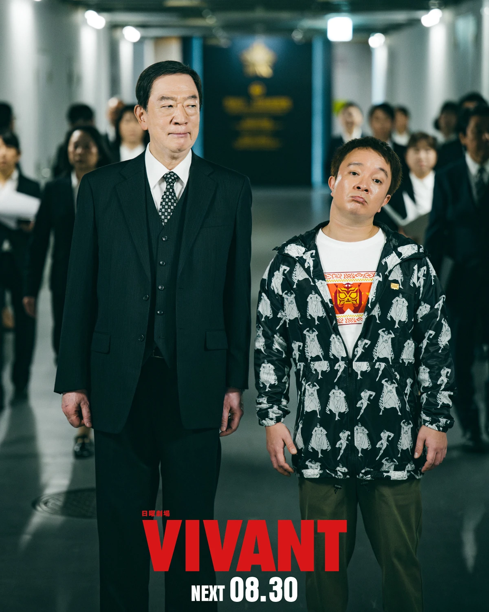

砂漠から国家へ
海外ロケで描かれる広大な景色が、事件のスケールを一気に押し広げる。画面の奥行きそのものが物語になる。
THE WORLD IS THE STAGETBS / SUNDAY THEATER / THE NEXT CHAPTER
敵か味方か、味方か敵か。
1億ドル、約140億円の誤送金から始まる、国境を越えた冒険。ひとりの商社マンに隠された「もう一つの顔」と、世界を巻き込む謎を読み解く。
01 / ABOUT
壮大な砂漠、二転三転する正体、そして家族の記憶。VIVANTを初めて観る人へ。
その男、
ただの会社員か。
丸菱商事の社員・乃木憂助は、本来1,000万ドルだった契約金を、何者かの改ざんによって1億ドル――劇中換算で約140億円――送金してしまう。取り戻すべき差額は9,000万ドル、約130億円。送金先のバルカ共和国で爆発事件に巻き込まれた乃木は、公安の野崎守、医師の柚木薫とともに脱出を目指すことになる。

WHAT MAKES IT VIVANT / 見どころ
映像のスケールだけではない。VIVANTが視線を離させない3つの理由。
海外ロケで描かれる広大な景色が、事件のスケールを一気に押し広げる。画面の奥行きそのものが物語になる。
THE WORLD IS THE STAGE何気ない台詞、視線、数字。散りばめられた違和感が、別の意味を持って立ち上がる。
TRUST NO ONE敵と味方の境界は何度も揺れる。国家、家族、信念が交差する人間ドラマが核心を熱くする。
EVERY CHOICE HAS A COST02 / CAST
タップすると、その人物の役割と物語の入口を表示します。核心は伏せています。
堺雅人、阿部寛、二階堂ふみ、松坂桃李、役所広司。豪華キャストが演じる、交差する5つの視線。
人物を組織から見るPHOTOGRAPHS / OFFICIAL TBS CHARACTER VISUALS
03 / WORLD
商社、公安、別班、テント。立場の違う組織が、一つの事件を別々の正義から見つめている。VIVANTの面白さは、誰の視点に立つかで景色が変わること。
INTEL / CLASSIFIED乃木が所属する会社。事件はここで起きた「誤送金」から動き出す。
野崎が所属する組織。国際テロの線から事件を追う。
表に出ない任務を担う、自衛隊直轄の非公認組織。
世界各地で活動する、謎に包まれた国際テロ組織。
乃木憂助の裏の顔は、自衛隊直轄の非公認組織「別班」の諜報員。追う国際テロ組織「テント」の指導者ノゴーン・ベキは、乃木の生き別れた父親でもある。家族の物語と国家の任務が、同じ一人の男の中で交差する。
04 / EPISODES
第1シーズンの流れを、核心を避けて記録。まずは気になる話数から、そしてできれば最初から。
EPISODE GUIDE / SPOILER LIGHT丸菱商事の乃木は、誤送金された1億ドル（約140億円）を取り戻すためバルカ共和国へ向かう。そこから、予想もしなかった逃走劇が始まる。
公安の野崎、医師の薫と出会った乃木は、爆発事件と自分にかけられた疑いから逃れようとする。
砂漠を舞台に、追う側と追われる側の思惑が交差する。乃木の行動に、少しずつ違和感が生まれる。
事件を追う線が日本へ戻り、乃木の能力と過去に隠されたものが物語の前面に現れる。
国家の表には出ない任務を担う者たち。チームの合流によって、事件の目的が大きく変わる。
謎の組織をめぐる情報がつながり始める。正義と悪を一言で決められない世界が見えてくる。
乃木の過去と現在が一本の線になる。追跡は、個人的な運命との対峙へ変わっていく。
同じ目的を掲げながらも、選ぶ手段は異なる。仲間たちの決断が、終盤の緊張を高める。
壮大な事件の奥にあった、ひとつの家族の物語。乃木は最も困難な選択を迫られる。
すべての線が交わり、物語は一つの決着を迎える。しかし、最後に残るのは新たな問いだった。
READY TO ENTER?
何も知らない状態で観ることが、VIVANTを最大限に楽しむ方法。視聴環境や配信状況は、各サービスの公式ページでご確認ください。